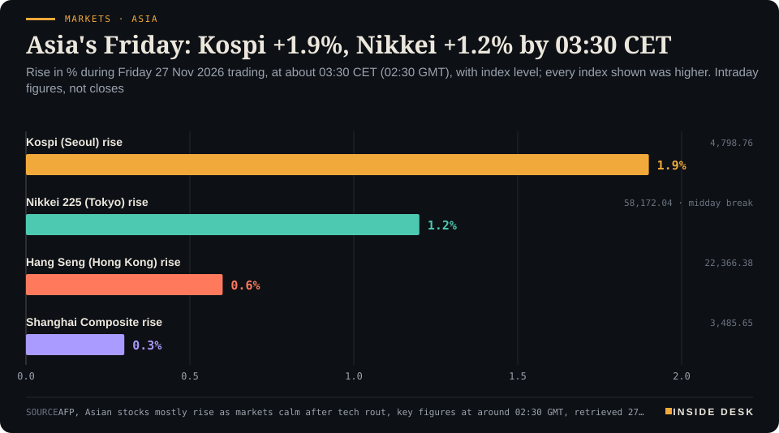
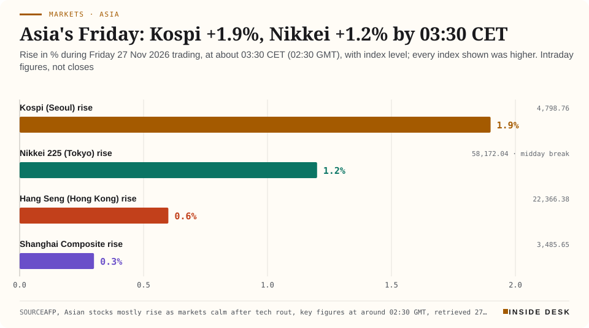
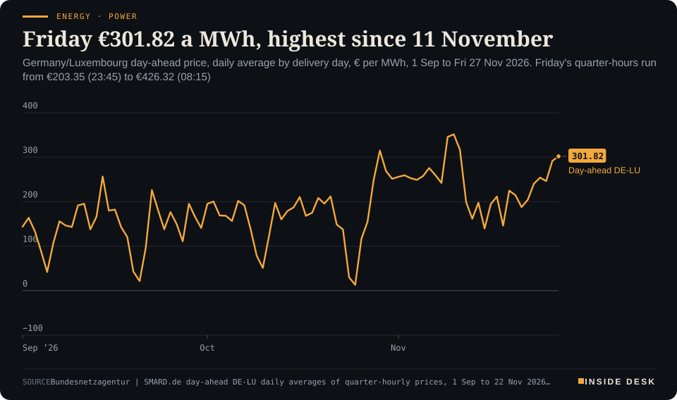
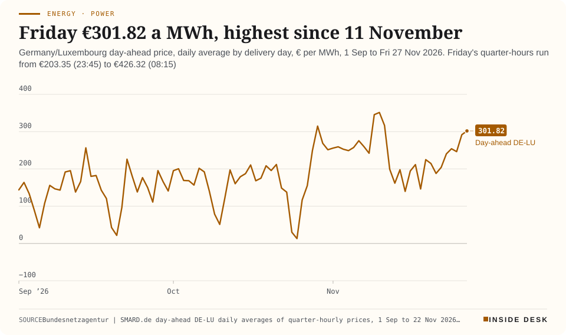
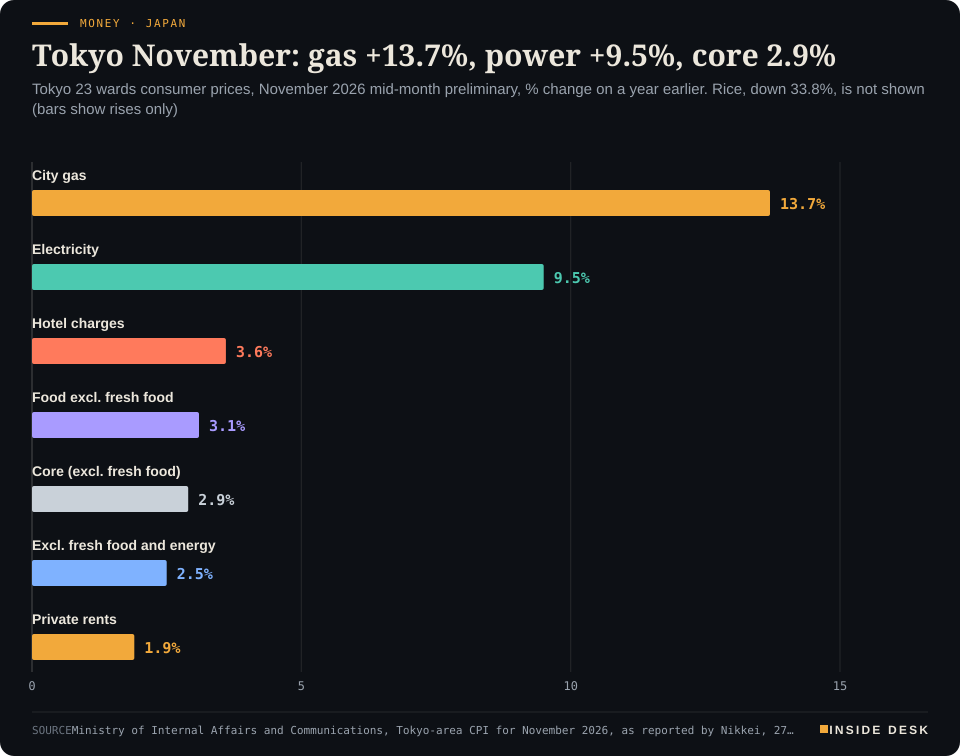
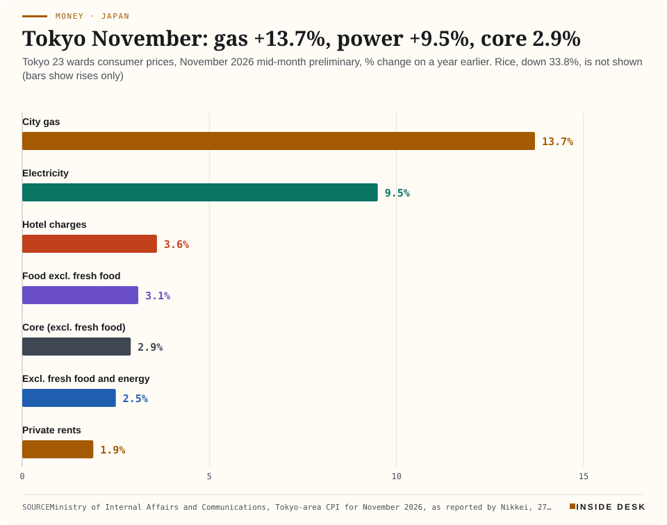

Inside Desk ePaper, Morning ePaper · Fri 27 Nov 2026
Friday, 27 November 2026Always free
Inside Desk
Morning ePaperAvailable 06:31 CET · Berlin
Lead · Security & Order
Zelenskyy warns of a new mass strike in the coming days while Trump's envoys brief Putin and Brussels counts 24 of 27. The shooting keeps one timetable, the paperwork another.
Zelenskyy warns of a new mass strike while envoys brief Putin and Brussels counts 24 of 27. Also: Europe rallying without New York, Nvidia's halted boxes, Tokyo's subsidy-free prices, Friday's breakfast-priced power, Germany's flu season at the door, an El Niño dry season for the Caribbean, and two Podium vs Print pieces.
Zelenskyy warns of a new mass strike while envoys brief Putin and Brussels counts 24 of 27. Also: Europe rallying without New York, Nvidia's halted boxes, Tokyo's subsidy-free prices, Friday's breakfast-priced power, Germany's flu season at the door, an El Niño dry season for the Caribbean, and two Podium vs Print pieces.
11 edition pieces · 11 desks · Available 06:31 CET, 27 November 2026
22 ePaper extras, added , 27 November. They appear only in the ePaper and carry their own time.
18:30 Evening ePaper, updated live until 22:30 with an “Updated” time and a Latest page
Sun 10:00 The Sunday Magazine
Berlin time. Every issue is free.
How to read it
Swipe, use the arrow keys or the page strip. Tap any headline for the reading view. Press / to search, t for contents, +/− to zoom. Download the PDF.
LeadInside Desk · Morning ePaper27 November 2026
Security & Order · Lead · 3 min
Zelenskyy warns of a new mass strike in the coming days while Trump's envoys brief Putin and Brussels counts 24 of 27. The shooting keeps one timetable, the paperwork another.
Russia struck Kyiv with ballistic missiles overnight into Friday, wounding seven people and hitting a shopping centre and two other buildings, Mayor Vitali Klitschko said1. Moscow said it had hit drone-related sites1. Hours earlier, in his nightly address, Volodymyr Zelenskyy said: “Unfortunately, we have information about a new mass strike being prepared by the Russians”1. He asked Ukrainians to watch the missile alarms “in the coming days”1. It was his second such warning this week1. The last big one is not abstract: on 20 November, by Zelenskyy’s count, Russia fired more than 400 drones and 110 missiles, killing eight people1.
That is one calendar: nights, alarms, repair crews. The other runs on flights and press conferences, and on Thursday it was busy.
Moscow and Mar-a-Lago. Jared Kushner and Steve Witkoff met Vladimir Putin in the Kremlin on Thursday3. They were following up US-mediated talks in Abu Dhabi on 10–11 November, the first direct trilateral round between Russia, Ukraine and the US in nine months, which produced an agreement in principle on a large prisoner exchange; numbers and timing are still being worked out3. Kushner spoke of “some openings and some opportunities” and said the envoys would go on to Dublin to meet Zelenskyy3. One aim, he said, was Moscow’s consent to European participation in later rounds3. In the meeting, according to the same report, Putin repeated his opposition to European troops in Ukraine and his claim to four Ukrainian regions3. In Florida, Donald Trump wrote that he had asked Putin in China to pull back “all Military aggression against territories throughout Europe”, called the war “A COMPLETE BLOODBATH” and a quick deal “a strong possibility”1. The Guardian noted that the post did not say which territories he meant, and did not name Ukraine2.
The long arm. On the battlefield the trend is the opposite of a pause. Ukraine launched nearly 500 strikes at Russian targets more than 500km away in 2026, more than in the first four years of the war combined, according to an AFP analysis of ACLED conflict-monitor data up to 20 November2. Overnight, Ukraine said its drones hit a refinery in Krasnodar, Transneft oil tanks in Bashkortostan and the Marinovka airfield near Volgograd1. At sea, Zelenskyy said seven naval drones hit the corvette Merkury and the cargo ship Angara off Libya on Monday; Libyan officials told the AP the Merkury was heavily damaged, not sunk1. The attack killed two Libyan army personnel, and Ukraine’s foreign minister expressed “regret” over its “unintended consequences”2. At least four Russian vessels have been targeted this month, Al Jazeera reports; a suspected Ukrainian drone also hit the Russia-bound cargo ship Sparta II in the Baltic near Finland1.
Brussels. At the special European Council, Council President António Costa reported that 24 member states supported the Commission’s proposal for an additional loan to Ukraine, Bulgaria only for the non-military part; “We will revert to this question in December”4. Al Jazeera puts the loan at €45 billion for next year, on top of a €90 billion loan agreed nearly a year ago1. On the seven-year budget, Costa was blunt: “We didn’t reach an agreement”4. Friedrich Merz had arrived saying the Union consists of “27 member states, not 23 or 24”5.
Reading the two calendars. You will hear a great deal this weekend about openings and possibilities. Notice which of the week’s facts are countable: a prisoner swap agreed in principle, a loan with 24 signatures, a budget without agreement, about 500 long-range strikes, seven wounded in Kyiv. The rest is podium. Peace, if it comes, will arrive the way the loan does: as a document with a number of signatures, a date and a ledger behind it. Until then the alarms in Kyiv keep the more reliable timetable.
Geo-economicsInside Desk · Morning ePaper27 November 2026
Geo-economics · 2 min
Nvidia has told Dell and Supermicro not to ship servers to four Southeast Asian countries. Export control is no longer a law; it is a shipping instruction.
Nvidia has told manufacturing partners such as Dell and Supermicro not to ship servers containing its chips to buyers in Malaysia, Singapore, Thailand and Indonesia, the Financial Times reported, citing three people familiar with the matter1. It is unclear whether the halt is temporary1. Nvidia declined to comment1.
The reason is a rule, not a slump. The US Commerce Department introduced measures last week to stop Chinese companies renting access to advanced chips through cloud providers in the region1. Cloud providers have 90 days to obtain a licence by proving their end users do not include restricted entities1. “There’s this new rule but no guidance on execution,” one cloud executive told the FT. “It’s causing sheer chaos in the region”1.
The sums are large. Nvidia booked $104 billion of revenue through its Singapore subsidiary in 2025, a 72% increase in a year, though that unit also records some Taiwan and China revenue1. TechCrunch, citing the Wall Street Journal, notes an Institute for Progress estimate that remote data centres like these supply about 24% of China’s AI computing power2. Bankers have stopped about $500 million of credit to one Singapore cloud project tied to ByteDance, according to the FT1.
The lesson is plain. For years, export controls lived in legal text, and the loophole lived in leases. Now compliance has moved to the loading dock, where it is measured in pallets that do not leave. The data-centre boom in Malaysia and Indonesia was partly built on Chinese demand1. A licence regime with a deadline and no guidance is how a policy becomes a balance-sheet problem for people who never met a policymaker.
Geo-economics · Short item · ePaper extra, added
Japan Tobacco has written off its Russian business after Moscow placed it under state administration. Its shares rallied on a different story.
Japan Tobacco will take a ¥1.4 trillion ($8.9 billion) charge after losing control of its Russian subsidiaries, pushing it to a full-year net loss and a lower dividend forecast, The Japan Times reported1. Russian presidential decrees this month placed all seven of its local subsidiaries under temporary administration, so the company lost management control and removed them from its accounts1. It now expects an operating loss of ¥368 billion instead of a ¥1 trillion profit1.
Prime Minister Sanae Takaichi raised the seizures, and Russia’s arrest of a Japanese journalist, with Vladimir Putin in China1.
On Friday JT shares rallied more than 4% in Tokyo, AFP reported, after a report that it was considering joining Altria in a takeover of Britain’s Imperial Brands; Imperial had jumped 13% in London on Thursday2.
Geo-economics · Brief · ePaper extra, added
Chinese companies have been using Nvidia chips remotely from data centres in Southeast Asia, TechCrunch reports, a route the Commerce Department closed earlier this month1. Citing the Wall Street Journal, it notes an Institute for Progress estimate that such remote data centres supply about 24% of China’s AI computing power1. CNA, publishing the FT’s report, adds that China’s leading AI labs still rely heavily on Nvidia processors for compute-intensive early training2. If the estimate is right, the halt in four countries tests a quarter of a rival’s capacity. That is an estimate from a think tank, not a measured figure.
Markets & MacroInside Desk · Morning ePaper27 November 2026
Markets & Macro · 2 min
Frankfurt rallied with New York shut; Asia added on Friday morning. The shortened Wall Street session decides whether that was relief or a turn.
The DAX closed on Thursday at 25,215.52, up 513.39 points or 2.08%, back above 25,000 a day after its lowest close since July1,2. It was broad in the way rallies rarely are: 39 of the 40 members rose, led by Volkswagen preference shares at plus 4.60%2. The only faller was Commerzbank, down 2.55%, as UniCredit moved on its supervisory board2. The MDax gained 2.34% to 29,263.97, according to a dpa-AFX report3. Wall Street was closed for Thanksgiving3.
Asia kept going on Friday morning, with chipmakers that had been sold hardest earlier in the week, SK hynix, Samsung and Kioxia, in demand again4.
Markets · AsiaAsia's Friday: Kospi +1.9%, Nikkei +1.2% by 03:30 CETRise in % during Friday 27 Nov 2026 trading, at about 03:30 CET (02:30 GMT), with index level; every index shown was higher. Intraday figures, not closes


Bar chart of Asian index rises during Friday 27 November 2026 trading at about 03:30 CET, every one higher: the Kospi up 1.9 percent at 4,798.76, the Nikkei 225 up 1.2 percent at 58,172.04 at its midday break, the Hang Seng up 0.6 percent at 22,366.38 and the Shanghai Composite up 0.3 percent at 3,485.65. These are intraday figures reported by AFP, not closes.
Source: AFP, Asian stocks mostly rise as markets calm after tech rout, key figures at around 02:30 GMT, retrieved 27 Nov 2026 · reported intraday figures · CSV
At about 03:30 CET the Nikkei 225 stood at 58,172.04, up 1.2%, and the Kospi at 4,798.76, up 1.9%4. Hong Kong was up 0.6% and Shanghai 0.3%4. Reuters reported S&P 500 futures up 0.8% and Nasdaq futures up 1% in Asian hours5. The proportion matters more than the direction: the Nikkei’s week is plus 2.7%, against minus 8.4% for November5.
Today New York trades a shortened session6. Thin holiday volume flatters every move, up or down. …
Markets & Macro · Short item · ePaper extra, added
UniCredit wants an extraordinary meeting to replace nine of ten shareholder representatives and install Andrea Orcel as chairman. Commerzbank's reply is procedural.
Commerzbank said on Thursday that UniCredit, its shareholder, has formally requested an extraordinary general meeting1. The agenda: remove nine of the ten current shareholder representatives on the supervisory board and elect ten new ones, after which UniCredit expects Andrea Orcel, its chief executive, to be elected chairman1. …
Markets & Macro · Brief · ePaper extra, added
Japan’s Nikkei was up 0.7% early on Friday, taking its weekly gain to 2.7%, against a loss of 8.4% for November, Reuters reported1. MSCI’s broadest Asia-Pacific index outside Japan was up 1.9% for the week and still down 8.2% for the month1. China’s blue chips slipped 0.2% after hitting their lowest level since June 2025 the day before1. Desk arithmetic: after an 8.4% fall you need about a 9.2% rise to get back. One good week is about 30% of the way there.
Nothing here is investment advice.
Politics & InstitutionsInside Desk · Morning ePaper27 November 2026
Politics & Institutions · Podium vs Print · 2 min
The chancellor arrived in Brussels demanding unanimity for Ukraine's loan. The Council president left with 24 supporters, no budget and a date in December.
Podium
“When the European Union provides funding, it does so as the European Union – and that union consists of 27 member states, not 23 or 24.”
Chancellor Friedrich Merz, arriving at the special European Council in Brussels, 26 November 2026
Print24 member states
24 member states supported the proposal. One of them, Bulgaria, will participate only on the non-military component... We will revert to this question in December.
European Council President António Costa, press conference after the special European Council, 26 November 2026 (published 27 November)
The podium. Friedrich Merz arrived at Thursday’s special summit with a sentence built for the doorstep. The loan to Ukraine for 2027, he said, must come from all of them: the Union “consists of 27 member states, not 23 or 24”1. He had threatened earlier to veto the bloc’s next seven-year budget unless every country signed up1,3.
The print. The Council’s own record of the evening is shorter. “24 member states supported the proposal,” António Costa told reporters, and one of them, Bulgaria, only for the non-military part, “with a focus on regions with its national minority”2. “We will revert to this question in December”2. Al Jazeera puts the proposal at €45 billion, on top of the €90 billion loan agreed nearly a year ago3. On the 2028–2034 budget, the summit’s main business, Costa reported: “We didn’t reach an agreement”2. Some governments wanted further cuts, most opposed them, and some wanted cuts to cohesion reversed; a large majority asked not to squeeze agriculture and cohesion2.
The gap. Desk arithmetic: the chancellor asked for 27 and got 24, one of them partial. That is the sentence he said Europe must not settle for, and it is what Europe produced on the night.
The dull part. Neither side of this lost. A doorstep line sets a price; a press-conference record tells you the market rate. The useful thing is that the record exists, counted and published within hours2. December now has three jobs: the loan, the budget and the new ECB leadership, which the same summit sent out for consultation2.
Politics & Institutions · Short item · ePaper extra, added
Special votes erased Christopher Luxon's majority. Seven Opportunity MPs now hold the balance, with Christmas four weeks away.
New Zealand’s official count, released on Friday, left the governing National, ACT and New Zealand First parties with 65 seats, exactly as many as Labour, the Greens, Te Pāti Māori and Opportunity combined, RNZ reports1. Both groupings are one short of a majority in a 130-seat parliament enlarged by a ten-seat overhang1. On election night the coalition had led by 67 seats to 641.
The swing came from 485,000 special votes and a second count of ordinary votes1. Labour’s Kieran McAnulty took Wairarapa from National by 81 votes, so a recount is likely1. National’s party vote was 28.35%, against 38.1% in 20231.
That puts Opportunity leader Qiulae Wong and her six colleagues in a pivotal spot1. RNZ thinks the most plausible path is Opportunity supporting the centre-right on key votes, or abstaining, in exchange for concessions; Wong’s bottom lines include stronger competition powers, limits on lobbying and donations and a ten-year cross-party health plan1. A fresh election is possible but improbable1.
There is no fixed deadline, but parliament must meet by 14 January1. Turnout was 77.2%1. The machinery is working exactly as designed: slowly, with recounts, in public.
Politics & InstitutionsInside Desk · Morning ePaper27 November 2026
The Bundestag votes today on the 2027 federal budget, Deutschlandfunk reports1. The coalition plans spending of €556 billion, about €31 billion more than this year; more than a third goes to labour and social affairs, and almost €140 billion to defence1. New borrowing across the core budget and special funds is about €210 billion1. The last dispute was the Union’s demand for a lower electricity tax for everyone1. Desk arithmetic: borrowing equals about 38% of planned spending, though part of it sits in special funds outside the core budget.
Psychology & BehaviourInside Desk · Morning ePaper27 November 2026
Psychology & Behaviour · 2 min
A new eleven-country European survey finds loneliness the strongest correlate of poor mental health, and the young carrying most of it.
What happened. A study published on 23 November in the Bundesgesundheitsblatt draws on CRONOS-3, a sub-survey of the European Social Survey run between 2024 and 2026 in 11 countries, with 7,968 respondents in the analysis1. Its authors, Insa Backhaus-Hoven and Terje Andreas Eikemo, looked at who reports poor mental health, and what travels with it1.
The numbers. About 6% of all respondents reported poor or very poor mental health, but 12.5% of adults aged 18 to 34 against 4.7% of older adults1. Then the striking finding: 37% of respondents had felt lonely most of the time during the previous week1. Among the young, 52.2% felt at least moderately lonely, against 32% of older adults1. In the regression, loneliness carried a prevalence ratio of 5.85 for poor subjective mental health, lack of social support 2.34 and lack of childhood friendship 2.541.
What a ratio is not. A prevalence ratio of 5.85 means poor mental health was reported almost six times as often among the lonely, after adjusting for age, gender, education and country1. It does not prove loneliness causes it; the authors stress that all measures are self-reported and that a single item is not a diagnosis1.
Why it matters. The study also found younger adults reported more unmet need for mental health care1. The authors argue that access to care matters but must come with efforts to reduce loneliness and strengthen social ties1. That is less glamorous than an app and more like urban planning: clubs, libraries, sports halls, the bus that still runs on a Sunday.
What to take from it. If you are one of the 37%, you are not unusual; you are in the largest minority in the room. The cheapest public-health measure in Europe may still be the invitation that is actually sent.
Psychology & Behaviour · Short item · ePaper extra, added
NORC measured isolation, integration and loneliness at once. The three groups barely overlap, which is the finding.
A NORC survey of 1,009 US adults, taken in April and published this month, measured social disconnection three ways at once1. 39% were at risk of social isolation, 45% were not broadly socially integrated and 36% were lonely1. Together, 70% met the threshold on at least one measure, 38% on at least two and 12% on all three1.
The measures correlate only modestly; isolation and loneliness at r=0.21, integration and loneliness at r=0.111. In plain words: the person with few contacts, the person who joins nothing and the person who feels lonely are often different people.
Age cuts the other way from the stereotype. Adults over 60 were the least lonely, at 24%; 18- to 29-year-olds the most, at 48%, and 15% of them met all three thresholds1. Lower income and being unmarried also raised every risk1.
The margin of error is 4 percentage points1. The practical point survives it: one programme will not fix three problems. A lunch club, a volunteer rota and a counsellor serve different people, and a town needs all three.
Among 15- to 22-year-olds surveyed in 16 countries, a median of 93% have a close in-person friend and 37% a close online-only friend, Gallup reports1. In-person friendships of medium or high quality were linked to higher life evaluation; online-only friendships were not, and those with one were more likely to report loneliness and moderate-to-severe anxiety and depression1. The strongest correlates of a good life were all offline: household income, feeling safe at home and the caregiver relationship1. Most samples were non-probability web panels1. The finding is still a quiet argument for the youth club.
Energy & IndustryInside Desk · Morning ePaper27 November 2026
Energy & Industry · 2 min
Friday's day-ahead average of €301.82 per megawatt hour hides a morning peak more than twice the price of the last quarter hour of the day.
Germany’s day-ahead price for delivery on Friday 27 November averages €301.82 per megawatt hour across its 96 quarter hours, according to Energy-Charts data from the Bundesnetzagentur’s SMARD platform1. That is up from €291.77 for Thursday and the highest daily average since the €316.65 of 11 November1.
Energy · PowerFriday €301.82 a MWh, highest since 11 NovemberGermany/Luxembourg day-ahead price, daily average by delivery day, € per MWh, 1 Sep to Fri 27 Nov 2026. Friday's quarter-hours run from €203.35 (23:45) to €426.32 (08:15)


Line chart of the daily average German-Luxembourg day-ahead electricity price from 1 September to 27 November 2026, in euros per megawatt hour. Prices mostly ran between about €100 and €210 in September and October, climbed above €250 from late October, peaked at €351.48 on Tuesday 10 November, fell to €139.70 on Sunday 15 November, rose to €240.42 on Monday 23 November, €291.77 on Thursday 26 November, and stand at €301.82 for the latest delivery day, Friday 27 November, the highest daily average since €316.65 on 11 November.
Source: Bundesnetzagentur | SMARD.de day-ahead DE-LU daily averages of quarter-hourly prices, 1 Sep to 22 Nov 2026 retrieved 22–23 Nov 2026; 23 to 27 Nov via Fraunhofer ISE Energy-Charts (data: Bundesnetzagentur | SMARD.de), 27 Nov retrieved 27 Nov 2026, 05:22 CET · CC BY 4.0 · CSV
The shape is the story. The most expensive quarter hour of the day starts at 08:15, at €426.32; the cheapest is the last, from 23:45, at €203.351. Desk arithmetic: the breakfast quarter hour costs 2.1 times the midnight one. On Thursday the dearest quarter hour came in the evening, at 17:45 (€388.02); on Friday it has moved to the start of the working day2.
What it means for you depends on your contract. Most households pay a fixed tariff and will never see this curve; those on dynamic tariffs see it directly, with grid fees, levies and taxes on top. For industry buying on the spot market, it is the difference between running a furnace at 08:00 or at 22:00.
The chart puts Friday in its season: daily averages mostly between €100 and €210 in September and October, above €240 on 16 of November’s 27 delivery days so far (desk count)1. Cold weeks are expensive not because of one dramatic hour, but because every quarter hour asks a little more.
Energy & Industry · Short item · ePaper extra, added
Houthi drones targeted Saudi Arabia's oldest refinery this week. Riyadh says it shot them down; the smoke says something was hit.
The Saudi-led coalition said air defences intercepted and destroyed four drones at Ras Tanura in the Eastern Province on Wednesday, without saying whether the refinery was hit1. Footage circulating online appeared to show smoke from the site; the Houthis said their strike caused fires, a claim not immediately verified1.
The site matters. …
Energy & Industry · Brief · ePaper extra, added
Brent crude futures slipped 0.4% early on Friday to $96.14 a barrel, Reuters reported, but were still up 3.9% for the week, the first weekly rise in four, and down 18% for the month1. AFP’s 03:30 CET snapshot had Brent at $96.31 and West Texas Intermediate up 2.1% at $85.472. The driver is supply risk: attacks on Gulf energy sites this week1,2. Desk arithmetic: an 18% monthly fall to $96.14 implies a level near $117 a month ago. Cheaper than then; not cheap.
Money, FX & CommitteesInside Desk · Morning ePaper27 November 2026
Money, FX & Committees · 2 min
Tokyo's core inflation hit a 16-month high as utility subsidies ended. Underneath, prices broadened from bento boxes to hotel rooms.
Consumer prices in Tokyo’s 23 wards excluding fresh food rose 2.9% in November from a year earlier, up from 2.6% in October and the fastest pace since July 2025, the internal affairs ministry reported on Friday1,2. The market median had been 3.0%1. Headline inflation was 2.8%; excluding fresh food and energy it was 2.5%, down from 2.6%1,2.
The jump has a plain cause. Government subsidies for electricity and gas, paid for three months, ended with November’s bills1. Energy prices rose 9.5%, after 2.2% in October; electricity was up 9.5%, also pushed by higher grid charges, and city gas 13.7%1.
Money · JapanTokyo November: gas +13.7%, power +9.5%, core 2.9%Tokyo 23 wards consumer prices, November 2026 mid-month preliminary, % change on a year earlier. Rice, down 33.8%, is not shown (bars show rises only)


Bar chart of year-on-year price rises in Tokyo's 23 wards in November 2026: city gas up 13.7 percent, electricity up 9.5 percent, hotel charges up 3.6 percent, food excluding fresh food up 3.1 percent, core prices excluding fresh food up 2.9 percent, prices excluding fresh food and energy up 2.5 percent and private rents up 1.9 percent. Rice prices fell 33.8 percent, the largest fall since January 1971, and are not shown.
Source: Ministry of Internal Affairs and Communications, Tokyo-area CPI for November 2026, as reported by Nikkei, 27 Nov 2026, retrieved 27 Nov 2026 · reported figures · CSV
But this is not only energy. Food excluding fresh food rose 3.1%, private rents 1.9% and hotel charges 3.6% on visitor demand1. JPMorgan’s Ayako Fujita told Reuters that higher prices for public transport and medical care suggest inflation “is no longer driven only by temporary supply shocks”2. The counterweight is rice, down 33.8%, the largest fall since comparable records began in January 1971, as stocks pile up1.
The Bank of Japan raised its policy rate to 1.25% in September and holds its next two-day meeting ending on 18 December2. …
Money, FX & Committees · Short item · ePaper extra, added
Two wire reports on the same Friday morning describe the Fed's December decision differently. The futures market settles which one to trust.
On Friday morning AFP wrote that in view was the Federal Reserve’s December decision, “with speculation swirling that it could opt for a hefty 50-basis-point hike instead of the usual 25 points”1. Reuters, the same morning, said futures imply a 99% chance of a 25 basis point rise, and that “speculation of a half-point increase has faded”2.
Money, FX & Committees · Brief · ePaper extra, added
The dollar index was at 103.8 on Friday, up 1.8% in November and heading for a third monthly gain, Reuters reported, supported by expected Fed rate rises and safe-haven demand during the equity sell-off1. The euro was flat at $1.0964 after the well-telegraphed choice of Pablo Hernández de Cos as next ECB president1. Two-year Treasury yields rose 3 basis points to 4.6705% and ten-year yields 4 basis points to 4.8918% as cash trading resumed after the holiday1. A strong dollar makes your dollar-priced imports, oil included, a little dearer in euros.
Nothing here is investment advice.
Ordinary & Inherited LifeInside Desk · Morning ePaper27 November 2026
Ordinary & Inherited Life · 2 min
Americans spent more online in the 22 days before Thanksgiving than ever, and the weekend is still to come. The interesting figure is the one on credit.
US shoppers spent more than $82.5 billion online from 1 to 22 November, 9.1% more than a year earlier, according to Adobe Analytics, which tracks visits to US retail sites1. Every one of those 22 days topped $3 billion, and two passed $4 billion, a first before Thanksgiving1.
Adobe forecasts $12.9 billion of online sales for Black Friday, up 9.2%, after $6.9 billion for Thanksgiving Day1. Cyber Monday is still expected to be the biggest day of the year, at $15.1 billion1. For November and December together Adobe expects $275.1 billion1.
Two lines deserve more attention than the totals. First, buy now, pay later purchases reached $6.1 billion, up 6.5%1. That is consumption financed in instalments, and it shows up in household budgets in February. Second, the figures are nominal: in a year when prices are rising, a 9% increase in spending is partly a 9% increase in what things cost.
None of this is a verdict on the American consumer. It is a till roll. The households behind it will tell you, in January’s card statements, whether it was confidence or credit.
Ordinary & Inherited Life · Short item · ePaper extra, added
Behind Tokyo's 2.9% are prices you can carry home in a bag, and one staple that has never been cheaper relative to a year before.
The averages in Friday’s Tokyo inflation data are made of very ordinary things, and Nikkei’s breakdown lists some of them1. Boxed lunches, bento, cost 44.0% more than a year ago after price revisions by large companies1. Restaurant hamburgers were up 16.4%1. Plastic bags, repriced in the summer, rose 32.7%1. Hotel rooms were up 3.6% on visitor demand and private rents 1.9%1.
Then the other side of the bag. Rice prices fell 33.8%, the largest drop since comparable records began in January 1971, because stocks have piled up1. Fresh food overall rose only 1.8%, after 7.0% in October when long rains had pushed up lettuce, cabbage and spring onions1.
Electricity bills rose 9.5% and city gas 13.7% after government subsidies ended1.
Desk arithmetic for a household: if rice and bento both appear in your weekly shop, you can feel prices falling and rising at once, and both feelings are accurate. An index is the average of a thousand such contradictions. That is why statisticians publish the components, and why you should read them.
Ordinary & Inherited Life · Brief · ePaper extra, added
The Federal Employment Agency publishes November labour-market data at 09:55 CET1. Economists polled by Dow Jones expect seasonally adjusted unemployment to rise by 6,000 after 4,000 in October, with the rate unchanged at 6.4%1. Those are expectations, not results; the real figures come out this morning. Shopping weekends make headlines. Payrolls decide whether January’s card bills get paid.
Tech & ComputeInside Desk · Morning ePaper27 November 2026
Tech & Compute · Podium vs Print · 2 min
Musk pledges SpaceX stock to every American child; Anthropic set aside 5% of its shares for a public-good fund. Same question, different plumbing.
Podium
“The share directly from me will be transferred when my lockup expires in June next year.”
Elon Musk, on X, 25–26 November 2026
Printalmost $18bn vs about $54bn
SpaceX shares closed at $127.44 on Wednesday, valuing the pledge at nearly $18bn... Anthropic said it would commit 5% of its shares to a new fund for the 'public good', worth around $54bn at current prices.
The Guardian (Reuters), on the pledge and on Anthropic's fund, 26 November 2026
The podium. Elon Musk wrote on X that every child in the US will get two SpaceX shares: one newly issued by the company, one from him1. SpaceX said it would contribute one Class A share to every currently active Trump Account, the programme meant to give every American under 18 a stake in the stock market; the White House says it has opened almost 70 million accounts1. Musk’s own share follows, he wrote, “when my lockup expires in June next year”1.
The print. At Wednesday’s close of $127.44, the pledge was valued at nearly $18 billion1. Anthropic, which went public this month, has taken a different route: 5% of its shares committed to a new fund for the “public good”, worth around $54 billion at current prices, which it said would give it flexibility to make donations1.
The gap. Desk arithmetic: two shares at $127.44 are about $255 per child, at one day’s price. One model sends a small, volatile asset into 70 million individual accounts; the other keeps a large block in one fund with a board deciding where it goes. Neither has yet been tested by a bad year for the share price.
The dull part. What will matter is the paperwork: custody, fees, what happens to fractional entitlements, when a child may sell, and how the shares are taxed. Generosity announced on a social network becomes real only in an account statement.
Nothing here is investment advice.
Tech & Compute · Short item · ePaper extra, added
Next Wednesday the EU outlaws AI-generated non-consensual intimate images and child abuse material, and older generative tools must label their output.
The EU’s Digital Omnibus on AI, Regulation 2026/1744, is often described as a delay, and for high-risk systems it is: those rules now apply from 2 December 2027 for Annex III uses such as recruitment and credit scoring, and from 2 August 2028 for products such as medical devices1. But next Wednesday, 2 December 2026, two new prohibitions take effect1.
The first covers AI systems that generate or manipulate realistic intimate images or sexually explicit content of an identifiable person without explicit consent; the second, AI-generated child sexual abuse material1. A provider can be caught even if its tool was not designed for this, where such output is a reasonably foreseeable result and the system lacks adequate safeguards1. Breaches of Article 5 prohibitions can draw fines of up to €35 million or 7% of worldwide turnover1.
Tech & ComputeInside Desk · Morning ePaper27 November 2026
Tech & Compute · Brief · ePaper extra, added
AI-referred visits to US retailers’ websites are up 127% on a year earlier this holiday season, Adobe Analytics reports1. It expects increases of 159% on Thanksgiving, 95% on Black Friday and 88% on Cyber Monday1. In Adobe’s own survey of 1,000 consumers, 81% said AI improved their online shopping1. Growth rates from a small base flatter; Adobe does not give AI’s share of total visits in this report. The question for retailers is less “how fast” than “how much of the till”.
Health & CareInside Desk · Morning ePaper27 November 2026
Health & Care · 2 min
The Robert Koch Institute sees influenza and Covid climbing, but rhinoviruses still lead. The official wave has not started, which is the best moment to act.
Acute respiratory illness in Germany stayed at a moderate level in calendar week 47, 16 to 22 November, according to the Robert Koch Institute’s weekly report published on Thursday1. Rhinoviruses and enteroviruses still dominate1. But influenza viruses have been found in sentinel samples every week since the season began, mainly A(H1N1)pdm09, and the RKI reports rising circulation of both influenza and SARS-CoV-21.
The numbers are modest so far. Of 160 sentinel samples sent to the national reference centre, 100 contained respiratory viruses: rhino- and enteroviruses in 31%, parainfluenza in 12%, influenza A and B in 9%, SARS-CoV-2 in 6% and RSV in 1%1. In hospitals, severe acute respiratory infections rose but stayed low; 7% of these patients received an influenza diagnosis and 4% Covid-191.
Notified influenza cases rose again, on a similar curve to last year at this time; Covid cases rose too, but fewer have been reported than last season1. Wastewater tells the same story: SARS-CoV-2 load below last year’s but climbing, influenza slightly up, RSV low1.
That is a season approaching, not one arrived. For practices, it is the time to stock vaccines and staff rotas; for hospitals, to plan beds before they fill. For you, it is the window in which a jab still has time to work before the curve turns.
Health & Care · Short item · ePaper extra, added
The CDC reports its worst measles year in decades, and federal and state death tallies no longer agree.
The US had 6,039 confirmed measles cases as of 24 November, across 47 jurisdictions, including 18 among international visitors, according to the CDC’s website1. The agency reports nine measles-related deaths this year1. Public state figures add up to at least 14, including nine in Pennsylvania and three in Wisconsin1.
The gap has a bureaucratic cause. Earlier this year the CDC switched to National Center for Health Statistics mortality data instead of state figures1. “The discrepancy between state and federal measles-related death figures is concerning,” immunologist Frederic Bertley told Reuters1.
The rest is not in dispute. Cases are at a 35-year high, driven largely by unvaccinated people, and this month the US lost its measles elimination status1. 671 patients, 11% of cases, were hospitalised; among children under five, 17%1. Pennsylvania alone has reported 1,679 cases, 87 in the past week1.
Two counting systems that disagree are a nuisance. They are also, quietly, a sign that two counting systems still exist. …
Health & Care · Short item · ePaper extra, added
Pfizer introduces Abrysvo in Korea as an alternative to antibody shots for infants. Price, not science, will decide the uptake.
Pfizer Korea presented Abrysvo, the country’s first RSV vaccine approved for use in pregnancy, in Seoul on Thursday, Korea Biomedical Review reports1. Given at 28 to 36 weeks of gestation, it protects infants from birth to six months1. A professor chairing the event expects it to be available to pregnant women in early 20271.
The evidence cited is solid. In the final analysis of the phase 3 MATISSE trial, it cut the risk of medically attended severe RSV lower respiratory disease in infants by 82.4% within 90 days of birth and 70% within 180 days1. Australia’s real-world STREETON study found 86.3% effectiveness against hospitalisation through two months and 77.8% through six1.
Price is the open question. Korean parents now pay 400,000 to 700,000 won out of pocket for antibody injections1. A CDC price list from March 2026 put Abrysvo at $319.07 a dose in the US private sector, against $595.06 for Beyfortus1. Pfizer did not disclose its Korean price1.
Security & OrderInside Desk · Morning ePaper27 November 2026
Security & Order · Short item · ePaper extra, added
Ukraine's military intelligence says North Korea has paused some arms deliveries to Russia. It is a claim from one side, and worth reading as such.
Ukraine’s military intelligence agency, the GUR, said on Thursday that North Korea has temporarily halted some military cooperation with Russia1. By its account the pause covers deliveries of KN-23 ballistic missiles and artillery shells, and Russian military flights over North Korean territory1.
The GUR’s explanation is diplomatic pique: it says North Korea’s foreign minister, Choe Son-hui, announced the pause last month after a Russian deputy foreign minister claimed Moscow would help ease tensions between Seoul and Pyongyang1. It also says Pyongyang is holding off a Russian request to raise its military presence in Russia from about 8,500 to 50,000 troops1.
The same agency says North Korean units remain in the Kursk region and that a North Korean missile unit has been in Voronezh since mid-summer1. South Korean and Western intelligence have said Pyongyang sent more than 10,000 soldiers to Kursk in 20241.
Treat this carefully. It comes from one side’s intelligence service, in wartime, and neither Moscow nor Pyongyang has confirmed it in the reporting. The useful test is physical: whether the volume of North Korean-type missiles and shells reported in Russian strikes falls over the coming weeks. Intelligence claims are hypotheses; debris is evidence.
Security & Order · Brief · ePaper extra, added
Saudi civil defence said 11 people were wounded on Tuesday when a strike hit a tower in Riyadh’s financial district, the capital’s tallest building and headquarters of the Public Investment Fund1. It was the second strike on the tower in less than a week; the first, on 19 November, caused damage but no injuries1. The Houthis claimed an attack on the district “in three phases”1. The group has targeted Saudi airports, oil infrastructure and buildings since Yemen’s frozen war reignited in July, The National reports1. A war that was about pipelines is now also about office floors.
Climate & WeatherInside Desk · Morning ePaper27 November 2026
Climate & Weather · 2 min
Regional climatologists warn of drought in the eastern and southern Caribbean through February, and of intense downpours in between. Water allocation is the policy question.
A strong El Niño is expected to bring significantly drier conditions, more heat and warmer seas to parts of the Caribbean in the 2026/27 dry season, the Caribbean Institute for Meteorology and Hydrology warned at a regional outlook forum in St Vincent on Wednesday1. The eastern and southern Caribbean are most exposed to below-normal rainfall and reduced water availability1.
“What that translates to for the Caribbean is a higher chance for drought,” said CIMH climatologist Cédric Van Meerbeeck1. He added that the year after an El Niño onset tends to bring “record warm or near-record warm conditions”1. The drier odds last until about February, the end of the northern hemisphere winter1.
Drought does not mean no rain. Van Meerbeeck said rainfall events will be “fewer and farther in between” but can still be intense, with flash floods and landslides, especially on volcanic islands1. Warmer water also raises the risk of coral bleaching and of a busier hurricane season next year1. The CIMH map of agricultural drought alerts for the end of December shows some territories on watch, warning or emergency, and others with no concern1.
His policy ask was not a technology. It was a conversation: “national discussions on how to allocate water sustainably across the sectors of society”1. Farms, hotels, households and hospitals drink from the same reservoirs. Deciding the order before the dry months is the cheapest adaptation there is.
Climate & Weather · Short item · ePaper extra, added
Successive storms stripped half or more of the yield from prime Victorian crops just as harvest began. The first crop insurance claim is the quiet hero.
Successive severe storm cells have damaged more than 60,000 hectares of crops in Victoria’s Mallee, about A$50 million of damage according to crop assessors’ initial surveys, Stock & Land reports1. More than 50 growers were hit, with 50 to 100% of yield stripped from prime lentil and barley crops1.
“As far as Victoria goes, this ranks up there with the biggest I have seen,” said crop consultant Marty Colbert1. Bumper yields magnified the loss: “30pc of six tonnes a hectare is a lot more than 30pc of 3t/h,” he said1.
Hopetoun growers Matt and Alex Webster lost 50 to 96% of the yield on 1,400 hectares of barley, lentils and wheat1. “This is the first crop insurance claim for us,” Matt Webster said; they insure every year because their land runs along a known storm line1.
The Bureau of Meteorology warned of more severe storms with heavy rain and possible large hail for the Mallee and northern Victoria on Friday1. Insurance is not glamorous adaptation. It is a premium paid in good years so that one bad afternoon does not end a farm.
Climate & Weather · Short item · ePaper extra, added
Storms and unusually high tides flooded eastern Vancouver Island. Another system arrives on Sunday.
Dozens of properties in Cedar, near Nanaimo, were placed under an evacuation order on Thursday after flooding, a day after the Regional District of Nanaimo declared a local state of emergency, CBC News reports1. Orders followed in Courtenay and from the Snuneymuxw First Nation, and Highways 19 and 4 were closed in places on Thursday evening1.
The storms coincided with king tides, which can run 0.3 to 0.6 metres above average, and Environment Canada said water levels could rise by as much as 0.7 metres at high tide1. The River Forecast Centre had predicted 50 to 100 millimetres of rain on the island and warned that saturated soils from earlier storms meant rapid runoff1.
By Thursday afternoon the storms had passed and “the highest tide is now behind us”, an Environment Canada meteorologist said, with a few calm days before another system on Sunday1.
The warnings, alerts, orders and reception centres worked in their dull sequence1. The advice stays the oldest in the book: never drive across a flooded road.
Charts and dataInside Desk · Morning ePaper27 November 2026
Charts and data
Energy · PowerFriday €301.82 a MWh, highest since 11 NovemberGermany/Luxembourg day-ahead price, daily average by delivery day, € per MWh, 1 Sep to Fri 27 Nov 2026. Friday's quarter-hours run from €203.35 (23:45) to €426.32 (08:15)
Line chart of the daily average German-Luxembourg day-ahead electricity price from 1 September to 27 November 2026, in euros per megawatt hour. Prices mostly ran between about €100 and €210 in September and October, climbed above €250 from late October, peaked at €351.48 on Tuesday 10 November, fell to €139.70 on Sunday 15 November, rose to €240.42 on Monday 23 November, €291.77 on Thursday 26 November, and stand at €301.82 for the latest delivery day, Friday 27 November, the highest daily average since €316.65 on 11 November.
Source: Bundesnetzagentur | SMARD.de day-ahead DE-LU daily averages of quarter-hourly prices, 1 Sep to 22 Nov 2026 retrieved 22–23 Nov 2026; 23 to 27 Nov via Fraunhofer ISE Energy-Charts (data: Bundesnetzagentur | SMARD.de), 27 Nov retrieved 27 Nov 2026, 05:22 CET · CC BY 4.0 · CSV
Latest values
Series
Value
Date
Chart
Day-ahead DE-LU
301.82
27 Nov 2026
Friday €301.82 a MWh, highest since 11 November
Last data point of each series in the charts above, from the Inside Desk data archive. Sources under each chart.
Back pageInside Desk · Morning ePaper27 November 2026
Before you close the tab
The day in one sentence
The shooting keeps one calendar and the diplomats another; trust the one that comes with signatures.
One thing you can do this week
Before the weekend, send one invitation you have been meaning to send: a walk, a coffee, a call at a fixed time. Put it in both calendars. Loneliness is common enough that the other person is quite possibly waiting for exactly that message.
A habit, not advice.
What went right
In Western Australia, RSV cases have fallen by 40 to 60% over the past three years, according to Perth paediatrician Peter Richmond, after the state offered infant antibody injections from 2024 and Australia added maternal RSV vaccination to its national programme in February 2025 1. "No introduction of a vaccine has had a bigger impact on my day-to-day work as a pediatrician," he said in Seoul on Thursday 1. Public programmes, procurement and patient record checks did this: the dull machinery of prevention.
In euros at home
Germany's day-ahead power price for Friday runs from €203.35 per megawatt hour in the quarter hour from 23:45 to €426.32 from 08:15 2. Desk arithmetic: that is 20.3 cents and 42.6 cents per kilowatt hour on the wholesale market. A 2 kWh load, a dishwasher cycle for example, costs about 85 cents of wholesale power at a quarter past eight in the morning and about 41 cents just before midnight: a difference of about 44 cents. Only households on a dynamic tariff see this directly, and grid fees, levies, taxes and VAT come on top.
Desk arithmetic on the cited figures.
Small words
Sentinel sample
A swab taken from a patient with a respiratory illness at one of a fixed network of doctors' practices and sent to the national reference laboratory 3. Because the network stays the same week after week, the share of samples with influenza, 9% in the week to 22 November, shows the trend even when most sick people are never tested 3.
Commentary for information only. Not investment, legal, tax, medical or political advice. Inside Desk is free and reader-supported. Every number is sourced in the piece it appears in.
This issue has been updated.
All articles in this edition
Security & Order · 3 min read
Seven wounded in Kyiv, envoys in Moscow: a war with two calendars
Zelenskyy warns of a new mass strike in the coming days while Trump's envoys brief Putin and Brussels counts 24 of 27. The shooting keeps one timetable, the paperwork another.
Russia struck Kyiv with ballistic missiles overnight into Friday, wounding seven people and hitting a shopping centre and two other buildings, Mayor Vitali Klitschko said1. Moscow said it had hit drone-related sites1. Hours earlier, in his nightly address, Volodymyr Zelenskyy said: “Unfortunately, we have information about a new mass strike being prepared by the Russians”1. He asked Ukrainians to watch the missile alarms “in the coming days”1. It was his second such warning this week1. The last big one is not abstract: on 20 November, by Zelenskyy’s count, Russia fired more than 400 drones and 110 missiles, killing eight people1.
That is one calendar: nights, alarms, repair crews. The other runs on flights and press conferences, and on Thursday it was busy.
Moscow and Mar-a-Lago. Jared Kushner and Steve Witkoff met Vladimir Putin in the Kremlin on Thursday3. They were following up US-mediated talks in Abu Dhabi on 10–11 November, the first direct trilateral round between Russia, Ukraine and the US in nine months, which produced an agreement in principle on a large prisoner exchange; numbers and timing are still being worked out3. Kushner spoke of “some openings and some opportunities” and said the envoys would go on to Dublin to meet Zelenskyy3. One aim, he said, was Moscow’s consent to European participation in later rounds3. In the meeting, according to the same report, Putin repeated his opposition to European troops in Ukraine and his claim to four Ukrainian regions3. In Florida, Donald Trump wrote that he had asked Putin in China to pull back “all Military aggression against territories throughout Europe”, called the war “A COMPLETE BLOODBATH” and a quick deal “a strong possibility”1. The Guardian noted that the post did not say which territories he meant, and did not name Ukraine2.
The long arm. On the battlefield the trend is the opposite of a pause. Ukraine launched nearly 500 strikes at Russian targets more than 500km away in 2026, more than in the first four years of the war combined, according to an AFP analysis of ACLED conflict-monitor data up to 20 November2. Overnight, Ukraine said its drones hit a refinery in Krasnodar, Transneft oil tanks in Bashkortostan and the Marinovka airfield near Volgograd1. At sea, Zelenskyy said seven naval drones hit the corvette Merkury and the cargo ship Angara off Libya on Monday; Libyan officials told the AP the Merkury was heavily damaged, not sunk1. The attack killed two Libyan army personnel, and Ukraine’s foreign minister expressed “regret” over its “unintended consequences”2. At least four Russian vessels have been targeted this month, Al Jazeera reports; a suspected Ukrainian drone also hit the Russia-bound cargo ship Sparta II in the Baltic near Finland1.
Brussels. At the special European Council, Council President António Costa reported that 24 member states supported the Commission’s proposal for an additional loan to Ukraine, Bulgaria only for the non-military part; “We will revert to this question in December”4. Al Jazeera puts the loan at €45 billion for next year, on top of a €90 billion loan agreed nearly a year ago1. On the seven-year budget, Costa was blunt: “We didn’t reach an agreement”4. Friedrich Merz had arrived saying the Union consists of “27 member states, not 23 or 24”5.
Reading the two calendars. You will hear a great deal this weekend about openings and possibilities. Notice which of the week’s facts are countable: a prisoner swap agreed in principle, a loan with 24 signatures, a budget without agreement, about 500 long-range strikes, seven wounded in Kyiv. The rest is podium. Peace, if it comes, will arrive the way the loan does: as a document with a number of signatures, a date and a ledger behind it. Until then the alarms in Kyiv keep the more reliable timetable.
Desk comment A ceasefire is not announced on a social network. It is drafted, numbered, signed and then, the dull part, obeyed.
$104 billion through Singapore, 90 days to comply: Nvidia stops the boxes
Nvidia has told Dell and Supermicro not to ship servers to four Southeast Asian countries. Export control is no longer a law; it is a shipping instruction.
Nvidia has told manufacturing partners such as Dell and Supermicro not to ship servers containing its chips to buyers in Malaysia, Singapore, Thailand and Indonesia, the Financial Times reported, citing three people familiar with the matter1. It is unclear whether the halt is temporary1. Nvidia declined to comment1.
The reason is a rule, not a slump. The US Commerce Department introduced measures last week to stop Chinese companies renting access to advanced chips through cloud providers in the region1. Cloud providers have 90 days to obtain a licence by proving their end users do not include restricted entities1. “There’s this new rule but no guidance on execution,” one cloud executive told the FT. “It’s causing sheer chaos in the region”1.
The sums are large. Nvidia booked $104 billion of revenue through its Singapore subsidiary in 2025, a 72% increase in a year, though that unit also records some Taiwan and China revenue1. TechCrunch, citing the Wall Street Journal, notes an Institute for Progress estimate that remote data centres like these supply about 24% of China’s AI computing power2. Bankers have stopped about $500 million of credit to one Singapore cloud project tied to ByteDance, according to the FT1.
The lesson is plain. For years, export controls lived in legal text, and the loophole lived in leases. Now compliance has moved to the loading dock, where it is measured in pallets that do not leave. The data-centre boom in Malaysia and Indonesia was partly built on Chinese demand1. A licence regime with a deadline and no guidance is how a policy becomes a balance-sheet problem for people who never met a policymaker.
Desk comment Rules written in Washington are enforced in a warehouse in Johor. The warehouse is where you learn whether they work.
¥1.4 trillion and seven subsidiaries: what Russia's decrees cost Japan Tobacco
Japan Tobacco has written off its Russian business after Moscow placed it under state administration. Its shares rallied on a different story.
Japan Tobacco will take a ¥1.4 trillion ($8.9 billion) charge after losing control of its Russian subsidiaries, pushing it to a full-year net loss and a lower dividend forecast, The Japan Times reported1. Russian presidential decrees this month placed all seven of its local subsidiaries under temporary administration, so the company lost management control and removed them from its accounts1. It now expects an operating loss of ¥368 billion instead of a ¥1 trillion profit1.
Prime Minister Sanae Takaichi raised the seizures, and Russia’s arrest of a Japanese journalist, with Vladimir Putin in China1.
On Friday JT shares rallied more than 4% in Tokyo, AFP reported, after a report that it was considering joining Altria in a takeover of Britain’s Imperial Brands; Imperial had jumped 13% in London on Thursday2.
The lesson for anyone running a plant abroad: an asset you cannot control is, for accounting purposes, an asset you do not have. Moscow did not need a court to move ¥1.4 trillion off a Japanese balance sheet. It needed a decree.
Appears only in the ePaper · Commentary for information only. Not advice.
Geo-economics · Brief · ePaper extra, added
24% of China's AI compute, rented abroad: the loophole Washington shut
One estimate puts remote data centres at about a quarter of China's AI computing power.
Chinese companies have been using Nvidia chips remotely from data centres in Southeast Asia, TechCrunch reports, a route the Commerce Department closed earlier this month1. Citing the Wall Street Journal, it notes an Institute for Progress estimate that such remote data centres supply about 24% of China’s AI computing power1. CNA, publishing the FT’s report, adds that China’s leading AI labs still rely heavily on Nvidia processors for compute-intensive early training2. If the estimate is right, the halt in four countries tests a quarter of a rival’s capacity. That is an estimate from a think tank, not a measured figure.
Appears only in the ePaper · Commentary for information only. Not advice.
Markets & Macro · 2 min read
Plus 2.08% on a holiday, a half day today: Europe went first
Frankfurt rallied with New York shut; Asia added on Friday morning. The shortened Wall Street session decides whether that was relief or a turn.
The DAX closed on Thursday at 25,215.52, up 513.39 points or 2.08%, back above 25,000 a day after its lowest close since July1,2. It was broad in the way rallies rarely are: 39 of the 40 members rose, led by Volkswagen preference shares at plus 4.60%2. The only faller was Commerzbank, down 2.55%, as UniCredit moved on its supervisory board2. The MDax gained 2.34% to 29,263.97, according to a dpa-AFX report3. Wall Street was closed for Thanksgiving3.
Asia kept going on Friday morning, with chipmakers that had been sold hardest earlier in the week, SK hynix, Samsung and Kioxia, in demand again4.
Markets · AsiaAsia's Friday: Kospi +1.9%, Nikkei +1.2% by 03:30 CETRise in % during Friday 27 Nov 2026 trading, at about 03:30 CET (02:30 GMT), with index level; every index shown was higher. Intraday figures, not closes
Bar chart of Asian index rises during Friday 27 November 2026 trading at about 03:30 CET, every one higher: the Kospi up 1.9 percent at 4,798.76, the Nikkei 225 up 1.2 percent at 58,172.04 at its midday break, the Hang Seng up 0.6 percent at 22,366.38 and the Shanghai Composite up 0.3 percent at 3,485.65. These are intraday figures reported by AFP, not closes.
Source: AFP, Asian stocks mostly rise as markets calm after tech rout, key figures at around 02:30 GMT, retrieved 27 Nov 2026 · reported intraday figures · CSV
At about 03:30 CET the Nikkei 225 stood at 58,172.04, up 1.2%, and the Kospi at 4,798.76, up 1.9%4. Hong Kong was up 0.6% and Shanghai 0.3%4. Reuters reported S&P 500 futures up 0.8% and Nasdaq futures up 1% in Asian hours5. The proportion matters more than the direction: the Nikkei’s week is plus 2.7%, against minus 8.4% for November5.
Today New York trades a shortened session6. Thin holiday volume flatters every move, up or down. A Capital.com analyst told Reuters a seasonal “Santa Rally” “currently appears elusive”5. Treat this morning’s green screens as a weather report, not a climate.
Nothing here is investment advice.
Desk comment A rally on a day the biggest market is closed is a rehearsal. The performance starts at 15:30.
Markets & Macro · Short item · ePaper extra, added
Nine of ten seats, one chair: UniCredit asks for Commerzbank's board
UniCredit wants an extraordinary meeting to replace nine of ten shareholder representatives and install Andrea Orcel as chairman. Commerzbank's reply is procedural.
Commerzbank said on Thursday that UniCredit, its shareholder, has formally requested an extraordinary general meeting1. The agenda: remove nine of the ten current shareholder representatives on the supervisory board and elect ten new ones, after which UniCredit expects Andrea Orcel, its chief executive, to be elected chairman1. Michael Gorriz would stay; six of the ten nominees, Orcel included, hold senior posts at UniCredit1.
UniCredit also intends to call a vote of no confidence in an unspecified number of management board members unless the supervisory board presents a severance agreement for them1. Commerzbank said its board would examine the request “entsprechend seiner gesetzlichen Pflichten” and call the meeting if the legal requirements are met1.
Chairman Jens Weidmann said a newly composed board must meet the governance standards of a systemically important bank1. Chief executive Bettina Orlopp pointed to the best nine-month result in the bank’s 156-year history1. The market’s verdict on Thursday: Commerzbank fell 2.55%, the only DAX member to close lower2.
This is what a takeover looks like after the headlines: a list of names, a meeting date, a vote count. The drama was the bid. The governance is the paperwork that follows.
Appears only in the ePaper · Commentary for information only. Not advice.
Markets & Macro · Brief · ePaper extra, added
Minus 8.4% for the month, plus 2.7% for the week: Tokyo's arithmetic
A good week in Asia repairs a fraction of a bad November.
Japan’s Nikkei was up 0.7% early on Friday, taking its weekly gain to 2.7%, against a loss of 8.4% for November, Reuters reported1. MSCI’s broadest Asia-Pacific index outside Japan was up 1.9% for the week and still down 8.2% for the month1. China’s blue chips slipped 0.2% after hitting their lowest level since June 2025 the day before1. Desk arithmetic: after an 8.4% fall you need about a 9.2% rise to get back. One good week is about 30% of the way there.
Appears only in the ePaper · Commentary for information only. Not advice.
Politics & Institutions · 2 min read
Podium vs Print: "27, not 23 or 24", and 24 signatures
The chancellor arrived in Brussels demanding unanimity for Ukraine's loan. The Council president left with 24 supporters, no budget and a date in December.
Podium
“When the European Union provides funding, it does so as the European Union – and that union consists of 27 member states, not 23 or 24.”
Chancellor Friedrich Merz, arriving at the special European Council in Brussels, 26 November 2026
Print24 member states
24 member states supported the proposal. One of them, Bulgaria, will participate only on the non-military component... We will revert to this question in December.
European Council President António Costa, press conference after the special European Council, 26 November 2026 (published 27 November)
The podium. Friedrich Merz arrived at Thursday’s special summit with a sentence built for the doorstep. The loan to Ukraine for 2027, he said, must come from all of them: the Union “consists of 27 member states, not 23 or 24”1. He had threatened earlier to veto the bloc’s next seven-year budget unless every country signed up1,3.
The print. The Council’s own record of the evening is shorter. “24 member states supported the proposal,” António Costa told reporters, and one of them, Bulgaria, only for the non-military part, “with a focus on regions with its national minority”2. “We will revert to this question in December”2. Al Jazeera puts the proposal at €45 billion, on top of the €90 billion loan agreed nearly a year ago3. On the 2028–2034 budget, the summit’s main business, Costa reported: “We didn’t reach an agreement”2. Some governments wanted further cuts, most opposed them, and some wanted cuts to cohesion reversed; a large majority asked not to squeeze agriculture and cohesion2.
The gap. Desk arithmetic: the chancellor asked for 27 and got 24, one of them partial. That is the sentence he said Europe must not settle for, and it is what Europe produced on the night.
The dull part. Neither side of this lost. A doorstep line sets a price; a press-conference record tells you the market rate. The useful thing is that the record exists, counted and published within hours2. December now has three jobs: the loan, the budget and the new ECB leadership, which the same summit sent out for consultation2.
Desk comment Unanimity is a fine word at the door. Inside, the Council counts signatures, and a count is honest even when it disappoints.
Politics & Institutions · Short item · ePaper extra, added
65 against 65 in a 130-seat house: New Zealand counts to a tie
Special votes erased Christopher Luxon's majority. Seven Opportunity MPs now hold the balance, with Christmas four weeks away.
New Zealand’s official count, released on Friday, left the governing National, ACT and New Zealand First parties with 65 seats, exactly as many as Labour, the Greens, Te Pāti Māori and Opportunity combined, RNZ reports1. Both groupings are one short of a majority in a 130-seat parliament enlarged by a ten-seat overhang1. On election night the coalition had led by 67 seats to 641.
The swing came from 485,000 special votes and a second count of ordinary votes1. Labour’s Kieran McAnulty took Wairarapa from National by 81 votes, so a recount is likely1. National’s party vote was 28.35%, against 38.1% in 20231.
That puts Opportunity leader Qiulae Wong and her six colleagues in a pivotal spot1. RNZ thinks the most plausible path is Opportunity supporting the centre-right on key votes, or abstaining, in exchange for concessions; Wong’s bottom lines include stronger competition powers, limits on lobbying and donations and a ten-year cross-party health plan1. A fresh election is possible but improbable1.
There is no fixed deadline, but parliament must meet by 14 January1. Turnout was 77.2%1. The machinery is working exactly as designed: slowly, with recounts, in public.
€556 billion, €210 billion borrowed: the Bundestag votes today
Germany's 2027 budget reaches its final vote after months of coalition talks.
The Bundestag votes today on the 2027 federal budget, Deutschlandfunk reports1. The coalition plans spending of €556 billion, about €31 billion more than this year; more than a third goes to labour and social affairs, and almost €140 billion to defence1. New borrowing across the core budget and special funds is about €210 billion1. The last dispute was the Union’s demand for a lower electricity tax for everyone1. Desk arithmetic: borrowing equals about 38% of planned spending, though part of it sits in special funds outside the core budget.
Appears only in the ePaper · Commentary for information only. Not advice.
Psychology & Behaviour · 2 min read
The Annex: 37% lonely most of the week, and a ratio of 5.85
A new eleven-country European survey finds loneliness the strongest correlate of poor mental health, and the young carrying most of it.
What happened. A study published on 23 November in the Bundesgesundheitsblatt draws on CRONOS-3, a sub-survey of the European Social Survey run between 2024 and 2026 in 11 countries, with 7,968 respondents in the analysis1. Its authors, Insa Backhaus-Hoven and Terje Andreas Eikemo, looked at who reports poor mental health, and what travels with it1.
The numbers. About 6% of all respondents reported poor or very poor mental health, but 12.5% of adults aged 18 to 34 against 4.7% of older adults1. Then the striking finding: 37% of respondents had felt lonely most of the time during the previous week1. Among the young, 52.2% felt at least moderately lonely, against 32% of older adults1. In the regression, loneliness carried a prevalence ratio of 5.85 for poor subjective mental health, lack of social support 2.34 and lack of childhood friendship 2.541.
What a ratio is not. A prevalence ratio of 5.85 means poor mental health was reported almost six times as often among the lonely, after adjusting for age, gender, education and country1. It does not prove loneliness causes it; the authors stress that all measures are self-reported and that a single item is not a diagnosis1.
Why it matters. The study also found younger adults reported more unmet need for mental health care1. The authors argue that access to care matters but must come with efforts to reduce loneliness and strengthen social ties1. That is less glamorous than an app and more like urban planning: clubs, libraries, sports halls, the bus that still runs on a Sunday.
What to take from it. If you are one of the 37%, you are not unusual; you are in the largest minority in the room. The cheapest public-health measure in Europe may still be the invitation that is actually sent.
Desk comment Loneliness is not a mood. In the data it behaves like a risk factor, and risk factors are what public health is for.
Psychology & Behaviour · Short item · ePaper extra, added
70% disconnected on at least one measure, 12% on all three
NORC measured isolation, integration and loneliness at once. The three groups barely overlap, which is the finding.
A NORC survey of 1,009 US adults, taken in April and published this month, measured social disconnection three ways at once1. 39% were at risk of social isolation, 45% were not broadly socially integrated and 36% were lonely1. Together, 70% met the threshold on at least one measure, 38% on at least two and 12% on all three1.
The measures correlate only modestly; isolation and loneliness at r=0.21, integration and loneliness at r=0.111. In plain words: the person with few contacts, the person who joins nothing and the person who feels lonely are often different people.
Age cuts the other way from the stereotype. Adults over 60 were the least lonely, at 24%; 18- to 29-year-olds the most, at 48%, and 15% of them met all three thresholds1. Lower income and being unmarried also raised every risk1.
The margin of error is 4 percentage points1. The practical point survives it: one programme will not fix three problems. A lunch club, a volunteer rota and a counsellor serve different people, and a town needs all three.
Gallup's survey of 15,925 young people in 16 countries finds in-person friendship tied to better lives; online-only friendship is not.
Among 15- to 22-year-olds surveyed in 16 countries, a median of 93% have a close in-person friend and 37% a close online-only friend, Gallup reports1. In-person friendships of medium or high quality were linked to higher life evaluation; online-only friendships were not, and those with one were more likely to report loneliness and moderate-to-severe anxiety and depression1. The strongest correlates of a good life were all offline: household income, feeling safe at home and the caregiver relationship1. Most samples were non-probability web panels1. The finding is still a quiet argument for the youth club.
Appears only in the ePaper · Commentary for information only. Not advice.
Energy & Industry · 2 min read
€426.32 at breakfast, €203.35 at midnight: Friday's power curve
Friday's day-ahead average of €301.82 per megawatt hour hides a morning peak more than twice the price of the last quarter hour of the day.
Germany’s day-ahead price for delivery on Friday 27 November averages €301.82 per megawatt hour across its 96 quarter hours, according to Energy-Charts data from the Bundesnetzagentur’s SMARD platform1. That is up from €291.77 for Thursday and the highest daily average since the €316.65 of 11 November1.
Energy · PowerFriday €301.82 a MWh, highest since 11 NovemberGermany/Luxembourg day-ahead price, daily average by delivery day, € per MWh, 1 Sep to Fri 27 Nov 2026. Friday's quarter-hours run from €203.35 (23:45) to €426.32 (08:15)
Line chart of the daily average German-Luxembourg day-ahead electricity price from 1 September to 27 November 2026, in euros per megawatt hour. Prices mostly ran between about €100 and €210 in September and October, climbed above €250 from late October, peaked at €351.48 on Tuesday 10 November, fell to €139.70 on Sunday 15 November, rose to €240.42 on Monday 23 November, €291.77 on Thursday 26 November, and stand at €301.82 for the latest delivery day, Friday 27 November, the highest daily average since €316.65 on 11 November.
Source: Bundesnetzagentur | SMARD.de day-ahead DE-LU daily averages of quarter-hourly prices, 1 Sep to 22 Nov 2026 retrieved 22–23 Nov 2026; 23 to 27 Nov via Fraunhofer ISE Energy-Charts (data: Bundesnetzagentur | SMARD.de), 27 Nov retrieved 27 Nov 2026, 05:22 CET · CC BY 4.0 · CSV
The shape is the story. The most expensive quarter hour of the day starts at 08:15, at €426.32; the cheapest is the last, from 23:45, at €203.351. Desk arithmetic: the breakfast quarter hour costs 2.1 times the midnight one. On Thursday the dearest quarter hour came in the evening, at 17:45 (€388.02); on Friday it has moved to the start of the working day2.
What it means for you depends on your contract. Most households pay a fixed tariff and will never see this curve; those on dynamic tariffs see it directly, with grid fees, levies and taxes on top. For industry buying on the spot market, it is the difference between running a furnace at 08:00 or at 22:00.
The chart puts Friday in its season: daily averages mostly between €100 and €210 in September and October, above €240 on 16 of November’s 27 delivery days so far (desk count)1. Cold weeks are expensive not because of one dramatic hour, but because every quarter hour asks a little more.
Desk comment An average is a fair summary of a day you did not live through. Your kettle lives through the quarter hours.
Energy & Industry · Short item · ePaper extra, added
16% of Saudi refining, 6.5 million barrels of loading: Ras Tanura again
Houthi drones targeted Saudi Arabia's oldest refinery this week. Riyadh says it shot them down; the smoke says something was hit.
The Saudi-led coalition said air defences intercepted and destroyed four drones at Ras Tanura in the Eastern Province on Wednesday, without saying whether the refinery was hit1. Footage circulating online appeared to show smoke from the site; the Houthis said their strike caused fires, a claim not immediately verified1.
The site matters. Ras Tanura is the kingdom’s oldest refinery, with 550,000 barrels a day of capacity, about 16% of Saudi refining1. The adjoining terminal can load about 6.5 million barrels a day, mostly for buyers in China, Japan, South Korea and India1. It has been attacked repeatedly this year, including by Iranian drones on 2 March and a claimed Houthi missile on 27 October1.
AFP reported on Friday that the Houthis struck a Saudi refinery, temporarily halting some operations, after an attack on another Gulf hub earlier in the week2. Oil extended Thursday’s gains of more than 1%2.
The market reaction has been modest, and the reason is in the history: Saudi Arabia shifted exports towards Yanbu on the Red Sea after the war with Iran began1. Redundancy is the least exciting word in energy, and the most valuable.
Appears only in the ePaper · Commentary for information only. Not advice.
Energy & Industry · Brief · ePaper extra, added
$96.14 and up 3.9% for the week, down 18% for the month
Brent is heading for its first weekly gain in four, on supply worries in the Gulf.
Brent crude futures slipped 0.4% early on Friday to $96.14 a barrel, Reuters reported, but were still up 3.9% for the week, the first weekly rise in four, and down 18% for the month1. AFP’s 03:30 CET snapshot had Brent at $96.31 and West Texas Intermediate up 2.1% at $85.472. The driver is supply risk: attacks on Gulf energy sites this week1,2. Desk arithmetic: an 18% monthly fall to $96.14 implies a level near $117 a month ago. Cheaper than then; not cheap.
Appears only in the ePaper · Commentary for information only. Not advice.
Money, FX & Committees · 2 min read
Gas +13.7%, power +9.5%: Tokyo prints 2.9% and the BOJ listens
Tokyo's core inflation hit a 16-month high as utility subsidies ended. Underneath, prices broadened from bento boxes to hotel rooms.
Consumer prices in Tokyo’s 23 wards excluding fresh food rose 2.9% in November from a year earlier, up from 2.6% in October and the fastest pace since July 2025, the internal affairs ministry reported on Friday1,2. The market median had been 3.0%1. Headline inflation was 2.8%; excluding fresh food and energy it was 2.5%, down from 2.6%1,2.
The jump has a plain cause. Government subsidies for electricity and gas, paid for three months, ended with November’s bills1. Energy prices rose 9.5%, after 2.2% in October; electricity was up 9.5%, also pushed by higher grid charges, and city gas 13.7%1.
Money · JapanTokyo November: gas +13.7%, power +9.5%, core 2.9%Tokyo 23 wards consumer prices, November 2026 mid-month preliminary, % change on a year earlier. Rice, down 33.8%, is not shown (bars show rises only)
Bar chart of year-on-year price rises in Tokyo's 23 wards in November 2026: city gas up 13.7 percent, electricity up 9.5 percent, hotel charges up 3.6 percent, food excluding fresh food up 3.1 percent, core prices excluding fresh food up 2.9 percent, prices excluding fresh food and energy up 2.5 percent and private rents up 1.9 percent. Rice prices fell 33.8 percent, the largest fall since January 1971, and are not shown.
Source: Ministry of Internal Affairs and Communications, Tokyo-area CPI for November 2026, as reported by Nikkei, 27 Nov 2026, retrieved 27 Nov 2026 · reported figures · CSV
But this is not only energy. Food excluding fresh food rose 3.1%, private rents 1.9% and hotel charges 3.6% on visitor demand1. JPMorgan’s Ayako Fujita told Reuters that higher prices for public transport and medical care suggest inflation “is no longer driven only by temporary supply shocks”2. The counterweight is rice, down 33.8%, the largest fall since comparable records began in January 1971, as stocks pile up1.
The Bank of Japan raised its policy rate to 1.25% in September and holds its next two-day meeting ending on 18 December2. A majority of analysts polled by Reuters expect a rise then and another by the end of March2. One economist told Reuters that market turmoil over AI and chips could still make the bank wait2. The quieter figure for the committee is the 2.5% underneath: a touch lower than last month, still above the 2% target1,2.
Nothing here is investment advice.
Desk comment Subsidies do not abolish a price. They postpone the day it is printed.
Money, FX & Committees · Short item · ePaper extra, added
Print vs print: 50 basis points, or 99% for 25
Two wire reports on the same Friday morning describe the Fed's December decision differently. The futures market settles which one to trust.
On Friday morning AFP wrote that in view was the Federal Reserve’s December decision, “with speculation swirling that it could opt for a hefty 50-basis-point hike instead of the usual 25 points”1. Reuters, the same morning, said futures imply a 99% chance of a 25 basis point rise, and that “speculation of a half-point increase has faded”2.
Both can be fair. Speculation is a conversation; futures are money. On the evidence of pricing, the market expects a quarter point, with almost no doubt about the direction2.
Reuters also quoted David Rees of Schroders: “The Fed could, of course, still blink,” though a “Fed put” would “not necessarily be unambiguously positive for markets”2. If growth and inflation stay firm, he said, markets could price a more hawkish Fed back in2.
The lesson for you as a reader is about sourcing. When an article says “speculation is swirling”, ask whose money is behind it. Futures prices are not forecasts of truth, but they are positions somebody pays for if wrong. That makes them a sturdier guide than adjectives.
Appears only in the ePaper · Commentary for information only. Not advice.
Money, FX & Committees · Brief · ePaper extra, added
103.8 and a third monthly gain: the dollar as a shelter
Rate-rise bets and stock-market nerves have pushed the dollar up 1.8% in November.
The dollar index was at 103.8 on Friday, up 1.8% in November and heading for a third monthly gain, Reuters reported, supported by expected Fed rate rises and safe-haven demand during the equity sell-off1. The euro was flat at $1.0964 after the well-telegraphed choice of Pablo Hernández de Cos as next ECB president1. Two-year Treasury yields rose 3 basis points to 4.6705% and ten-year yields 4 basis points to 4.8918% as cash trading resumed after the holiday1. A strong dollar makes your dollar-priced imports, oil included, a little dearer in euros.
Appears only in the ePaper · Commentary for information only. Not advice.
Ordinary & Inherited Life · 2 min read
Ordinary Ledger: $82.5 billion before the turkey, $12.9 billion forecast today
Americans spent more online in the 22 days before Thanksgiving than ever, and the weekend is still to come. The interesting figure is the one on credit.
US shoppers spent more than $82.5 billion online from 1 to 22 November, 9.1% more than a year earlier, according to Adobe Analytics, which tracks visits to US retail sites1. Every one of those 22 days topped $3 billion, and two passed $4 billion, a first before Thanksgiving1.
Adobe forecasts $12.9 billion of online sales for Black Friday, up 9.2%, after $6.9 billion for Thanksgiving Day1. Cyber Monday is still expected to be the biggest day of the year, at $15.1 billion1. For November and December together Adobe expects $275.1 billion1.
Two lines deserve more attention than the totals. First, buy now, pay later purchases reached $6.1 billion, up 6.5%1. That is consumption financed in instalments, and it shows up in household budgets in February. Second, the figures are nominal: in a year when prices are rising, a 9% increase in spending is partly a 9% increase in what things cost.
None of this is a verdict on the American consumer. It is a till roll. The households behind it will tell you, in January’s card statements, whether it was confidence or credit.
Desk comment A record in nominal dollars in an inflationary year is a receipt, not a celebration. Read the instalments line.
Ordinary & Inherited Life · Short item · ePaper extra, added
Bento +44%, rice −33.8%: the Tokyo price list
Behind Tokyo's 2.9% are prices you can carry home in a bag, and one staple that has never been cheaper relative to a year before.
The averages in Friday’s Tokyo inflation data are made of very ordinary things, and Nikkei’s breakdown lists some of them1. Boxed lunches, bento, cost 44.0% more than a year ago after price revisions by large companies1. Restaurant hamburgers were up 16.4%1. Plastic bags, repriced in the summer, rose 32.7%1. Hotel rooms were up 3.6% on visitor demand and private rents 1.9%1.
Then the other side of the bag. Rice prices fell 33.8%, the largest drop since comparable records began in January 1971, because stocks have piled up1. Fresh food overall rose only 1.8%, after 7.0% in October when long rains had pushed up lettuce, cabbage and spring onions1.
Electricity bills rose 9.5% and city gas 13.7% after government subsidies ended1.
Desk arithmetic for a household: if rice and bento both appear in your weekly shop, you can feel prices falling and rising at once, and both feelings are accurate. An index is the average of a thousand such contradictions. That is why statisticians publish the components, and why you should read them.
Appears only in the ePaper · Commentary for information only. Not advice.
Ordinary & Inherited Life · Brief · ePaper extra, added
6.4% expected at 09:55: the labour number that outlasts Black Friday
Germany's November jobless figures arrive this morning.
The Federal Employment Agency publishes November labour-market data at 09:55 CET1. Economists polled by Dow Jones expect seasonally adjusted unemployment to rise by 6,000 after 4,000 in October, with the rate unchanged at 6.4%1. Those are expectations, not results; the real figures come out this morning. Shopping weekends make headlines. Payrolls decide whether January’s card bills get paid.
Appears only in the ePaper · Commentary for information only. Not advice.
Tech & Compute · 2 min read
Two shares vs 5%: two ways to hand out the AI boom
Musk pledges SpaceX stock to every American child; Anthropic set aside 5% of its shares for a public-good fund. Same question, different plumbing.
Podium
“The share directly from me will be transferred when my lockup expires in June next year.”
Elon Musk, on X, 25–26 November 2026
Printalmost $18bn vs about $54bn
SpaceX shares closed at $127.44 on Wednesday, valuing the pledge at nearly $18bn... Anthropic said it would commit 5% of its shares to a new fund for the 'public good', worth around $54bn at current prices.
The Guardian (Reuters), on the pledge and on Anthropic's fund, 26 November 2026
The podium. Elon Musk wrote on X that every child in the US will get two SpaceX shares: one newly issued by the company, one from him1. SpaceX said it would contribute one Class A share to every currently active Trump Account, the programme meant to give every American under 18 a stake in the stock market; the White House says it has opened almost 70 million accounts1. Musk’s own share follows, he wrote, “when my lockup expires in June next year”1.
The print. At Wednesday’s close of $127.44, the pledge was valued at nearly $18 billion1. Anthropic, which went public this month, has taken a different route: 5% of its shares committed to a new fund for the “public good”, worth around $54 billion at current prices, which it said would give it flexibility to make donations1.
The gap. Desk arithmetic: two shares at $127.44 are about $255 per child, at one day’s price. One model sends a small, volatile asset into 70 million individual accounts; the other keeps a large block in one fund with a board deciding where it goes. Neither has yet been tested by a bad year for the share price.
The dull part. What will matter is the paperwork: custody, fees, what happens to fractional entitlements, when a child may sell, and how the shares are taxed. Generosity announced on a social network becomes real only in an account statement.
Nothing here is investment advice.
Desk comment A gift measured at Wednesday's closing price is worth Wednesday's closing price. Ask what it is worth on the day it arrives.
2 December: two new bans in the AI Act, and a marking deadline
Next Wednesday the EU outlaws AI-generated non-consensual intimate images and child abuse material, and older generative tools must label their output.
The EU’s Digital Omnibus on AI, Regulation 2026/1744, is often described as a delay, and for high-risk systems it is: those rules now apply from 2 December 2027 for Annex III uses such as recruitment and credit scoring, and from 2 August 2028 for products such as medical devices1. But next Wednesday, 2 December 2026, two new prohibitions take effect1.
The first covers AI systems that generate or manipulate realistic intimate images or sexually explicit content of an identifiable person without explicit consent; the second, AI-generated child sexual abuse material1. A provider can be caught even if its tool was not designed for this, where such output is a reasonably foreseeable result and the system lacks adequate safeguards1. Breaches of Article 5 prohibitions can draw fines of up to €35 million or 7% of worldwide turnover1.
The same date ends a transition: generative AI systems placed on the market before 2 August 2026 must comply with the machine-readable marking obligation for synthetic content1.
This is regulation at its least glamorous and most useful: a date, a definition, a fine. The test is not the press release in Brussels but whether image tools ship with safeguards that work on the morning of 2 December.
Appears only in the ePaper · Commentary for information only. Not advice.
Tech & Compute · Brief · ePaper extra, added
+127%: AI is now sending shoppers to the till
Adobe counts AI-referred visits to US retail sites more than doubling this season.
AI-referred visits to US retailers’ websites are up 127% on a year earlier this holiday season, Adobe Analytics reports1. It expects increases of 159% on Thanksgiving, 95% on Black Friday and 88% on Cyber Monday1. In Adobe’s own survey of 1,000 consumers, 81% said AI improved their online shopping1. Growth rates from a small base flatter; Adobe does not give AI’s share of total visits in this report. The question for retailers is less “how fast” than “how much of the till”.
Appears only in the ePaper · Commentary for information only. Not advice.
Health & Care · 2 min read
9% of samples, H1N1 rising: Germany's flu season knocks, not yet in
The Robert Koch Institute sees influenza and Covid climbing, but rhinoviruses still lead. The official wave has not started, which is the best moment to act.
Acute respiratory illness in Germany stayed at a moderate level in calendar week 47, 16 to 22 November, according to the Robert Koch Institute’s weekly report published on Thursday1. Rhinoviruses and enteroviruses still dominate1. But influenza viruses have been found in sentinel samples every week since the season began, mainly A(H1N1)pdm09, and the RKI reports rising circulation of both influenza and SARS-CoV-21.
The numbers are modest so far. Of 160 sentinel samples sent to the national reference centre, 100 contained respiratory viruses: rhino- and enteroviruses in 31%, parainfluenza in 12%, influenza A and B in 9%, SARS-CoV-2 in 6% and RSV in 1%1. In hospitals, severe acute respiratory infections rose but stayed low; 7% of these patients received an influenza diagnosis and 4% Covid-191.
Notified influenza cases rose again, on a similar curve to last year at this time; Covid cases rose too, but fewer have been reported than last season1. Wastewater tells the same story: SARS-CoV-2 load below last year’s but climbing, influenza slightly up, RSV low1.
That is a season approaching, not one arrived. For practices, it is the time to stock vaccines and staff rotas; for hospitals, to plan beds before they fill. For you, it is the window in which a jab still has time to work before the curve turns.
Desk comment The quiet weeks before a wave are not a pause. They are the only time preparation is cheap.
6,039 cases, 9 deaths or 14: America's measles count
The CDC reports its worst measles year in decades, and federal and state death tallies no longer agree.
The US had 6,039 confirmed measles cases as of 24 November, across 47 jurisdictions, including 18 among international visitors, according to the CDC’s website1. The agency reports nine measles-related deaths this year1. Public state figures add up to at least 14, including nine in Pennsylvania and three in Wisconsin1.
The gap has a bureaucratic cause. Earlier this year the CDC switched to National Center for Health Statistics mortality data instead of state figures1. “The discrepancy between state and federal measles-related death figures is concerning,” immunologist Frederic Bertley told Reuters1.
The rest is not in dispute. Cases are at a 35-year high, driven largely by unvaccinated people, and this month the US lost its measles elimination status1. 671 patients, 11% of cases, were hospitalised; among children under five, 17%1. Pennsylvania alone has reported 1,679 cases, 87 in the past week1.
Two counting systems that disagree are a nuisance. They are also, quietly, a sign that two counting systems still exist. The remedy for measles is the same under either total: two doses of a vaccine that has worked for decades.
Appears only in the ePaper · Commentary for information only. Not advice.
Health & Care · Short item · ePaper extra, added
82.4% at 90 days: Korea gets a maternal RSV vaccine
Pfizer introduces Abrysvo in Korea as an alternative to antibody shots for infants. Price, not science, will decide the uptake.
Pfizer Korea presented Abrysvo, the country’s first RSV vaccine approved for use in pregnancy, in Seoul on Thursday, Korea Biomedical Review reports1. Given at 28 to 36 weeks of gestation, it protects infants from birth to six months1. A professor chairing the event expects it to be available to pregnant women in early 20271.
The evidence cited is solid. In the final analysis of the phase 3 MATISSE trial, it cut the risk of medically attended severe RSV lower respiratory disease in infants by 82.4% within 90 days of birth and 70% within 180 days1. Australia’s real-world STREETON study found 86.3% effectiveness against hospitalisation through two months and 77.8% through six1.
Price is the open question. Korean parents now pay 400,000 to 700,000 won out of pocket for antibody injections1. A CDC price list from March 2026 put Abrysvo at $319.07 a dose in the US private sector, against $595.06 for Beyfortus1. Pfizer did not disclose its Korean price1.
Korea’s immunisation committee is reviewing priorities for its national programme for the first time in three years, with RSV vaccines and antibodies both candidates1. That review, not the launch, is the real event: public programmes turn good products into high coverage.
Appears only in the ePaper · Commentary for information only. Not advice.
Security & Order · Short item · ePaper extra, added
KN-23s on hold, 8,500 not 50,000: Kyiv's reading of Pyongyang
Ukraine's military intelligence says North Korea has paused some arms deliveries to Russia. It is a claim from one side, and worth reading as such.
Ukraine’s military intelligence agency, the GUR, said on Thursday that North Korea has temporarily halted some military cooperation with Russia1. By its account the pause covers deliveries of KN-23 ballistic missiles and artillery shells, and Russian military flights over North Korean territory1.
The GUR’s explanation is diplomatic pique: it says North Korea’s foreign minister, Choe Son-hui, announced the pause last month after a Russian deputy foreign minister claimed Moscow would help ease tensions between Seoul and Pyongyang1. It also says Pyongyang is holding off a Russian request to raise its military presence in Russia from about 8,500 to 50,000 troops1.
The same agency says North Korean units remain in the Kursk region and that a North Korean missile unit has been in Voronezh since mid-summer1. South Korean and Western intelligence have said Pyongyang sent more than 10,000 soldiers to Kursk in 20241.
Treat this carefully. It comes from one side’s intelligence service, in wartime, and neither Moscow nor Pyongyang has confirmed it in the reporting. The useful test is physical: whether the volume of North Korean-type missiles and shells reported in Russian strikes falls over the coming weeks. Intelligence claims are hypotheses; debris is evidence.
Appears only in the ePaper · Commentary for information only. Not advice.
Security & Order · Brief · ePaper extra, added
Eleven wounded, the tallest tower twice: Riyadh's financial district
Houthi strikes on Saudi Arabia have moved from oil sites to office towers.
Saudi civil defence said 11 people were wounded on Tuesday when a strike hit a tower in Riyadh’s financial district, the capital’s tallest building and headquarters of the Public Investment Fund1. It was the second strike on the tower in less than a week; the first, on 19 November, caused damage but no injuries1. The Houthis claimed an attack on the district “in three phases”1. The group has targeted Saudi airports, oil infrastructure and buildings since Yemen’s frozen war reignited in July, The National reports1. A war that was about pipelines is now also about office floors.
Appears only in the ePaper · Commentary for information only. Not advice.
Climate & Weather · 2 min read
Fewer rains, more heat: the Caribbean's El Niño dry season
Regional climatologists warn of drought in the eastern and southern Caribbean through February, and of intense downpours in between. Water allocation is the policy question.
A strong El Niño is expected to bring significantly drier conditions, more heat and warmer seas to parts of the Caribbean in the 2026/27 dry season, the Caribbean Institute for Meteorology and Hydrology warned at a regional outlook forum in St Vincent on Wednesday1. The eastern and southern Caribbean are most exposed to below-normal rainfall and reduced water availability1.
“What that translates to for the Caribbean is a higher chance for drought,” said CIMH climatologist Cédric Van Meerbeeck1. He added that the year after an El Niño onset tends to bring “record warm or near-record warm conditions”1. The drier odds last until about February, the end of the northern hemisphere winter1.
Drought does not mean no rain. Van Meerbeeck said rainfall events will be “fewer and farther in between” but can still be intense, with flash floods and landslides, especially on volcanic islands1. Warmer water also raises the risk of coral bleaching and of a busier hurricane season next year1. The CIMH map of agricultural drought alerts for the end of December shows some territories on watch, warning or emergency, and others with no concern1.
His policy ask was not a technology. It was a conversation: “national discussions on how to allocate water sustainably across the sectors of society”1. Farms, hotels, households and hospitals drink from the same reservoirs. Deciding the order before the dry months is the cheapest adaptation there is.
Desk comment A drought outlook is not a prophecy. It is a request to read the water meter more often.
Climate & Weather · Short item · ePaper extra, added
A$50 million in a hail line: the Mallee harvest takes the hit
Successive storms stripped half or more of the yield from prime Victorian crops just as harvest began. The first crop insurance claim is the quiet hero.
Successive severe storm cells have damaged more than 60,000 hectares of crops in Victoria’s Mallee, about A$50 million of damage according to crop assessors’ initial surveys, Stock & Land reports1. More than 50 growers were hit, with 50 to 100% of yield stripped from prime lentil and barley crops1.
“As far as Victoria goes, this ranks up there with the biggest I have seen,” said crop consultant Marty Colbert1. Bumper yields magnified the loss: “30pc of six tonnes a hectare is a lot more than 30pc of 3t/h,” he said1.
Hopetoun growers Matt and Alex Webster lost 50 to 96% of the yield on 1,400 hectares of barley, lentils and wheat1. “This is the first crop insurance claim for us,” Matt Webster said; they insure every year because their land runs along a known storm line1.
The Bureau of Meteorology warned of more severe storms with heavy rain and possible large hail for the Mallee and northern Victoria on Friday1. Insurance is not glamorous adaptation. It is a premium paid in good years so that one bad afternoon does not end a farm.
Appears only in the ePaper · Commentary for information only. Not advice.
Climate & Weather · Short item · ePaper extra, added
0.7 metres of surge, Cedar evacuated: British Columbia's king tides
Storms and unusually high tides flooded eastern Vancouver Island. Another system arrives on Sunday.
Dozens of properties in Cedar, near Nanaimo, were placed under an evacuation order on Thursday after flooding, a day after the Regional District of Nanaimo declared a local state of emergency, CBC News reports1. Orders followed in Courtenay and from the Snuneymuxw First Nation, and Highways 19 and 4 were closed in places on Thursday evening1.
The storms coincided with king tides, which can run 0.3 to 0.6 metres above average, and Environment Canada said water levels could rise by as much as 0.7 metres at high tide1. The River Forecast Centre had predicted 50 to 100 millimetres of rain on the island and warned that saturated soils from earlier storms meant rapid runoff1.
By Thursday afternoon the storms had passed and “the highest tide is now behind us”, an Environment Canada meteorologist said, with a few calm days before another system on Sunday1.
The warnings, alerts, orders and reception centres worked in their dull sequence1. The advice stays the oldest in the book: never drive across a flooded road.